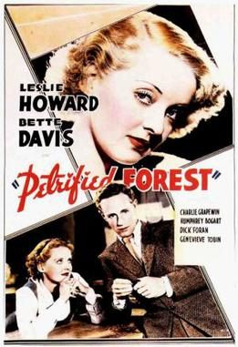

The Petrified Forest
Starring: Leslie Howard, Bette Davis, Humphrey Bogart
Director: Archie Mayo
Writer: Delmer Daves
Producer: Hal B. Wallis
The Petrified Forest is a 1936 American crime tragedy film directed by Archie Mayo and based on Robert E. Sherwood's 1934 drama of the same name. The motion picture stars Leslie Howard, Bette Davis and Humphrey Bogart. The screenplay was written by Delmer Daves and Charles Kenyon, and adaptations were later performed on radio and television. The film is set in Petrified Forest National Park in Arizona.
Previous Showings
6 Runs • 3 Festivals
Original Billings: 1 run (March 8, 1936)
Original Run: March 8, 1936 (Sunday - Tuesday)
All runs on record (6):
- March 8, 1936 (Sunday - Tuesday)Leslie Howard, Bette Davis
- November 14 - 16, 1997w/ Marked Woman
- May 24 - 25, 2008w/ Bordertown
- March 26 - 28, 2011Winter 2011 Early Bette Davis, Val Lewton and morew/ Jezebel
- August 1 - 2, 2017Warner Brosw/ Heroes for Sale
- May 24 - 25, 2018Bette Davis Complete early films: 1931 - 1938w/ Bordertown